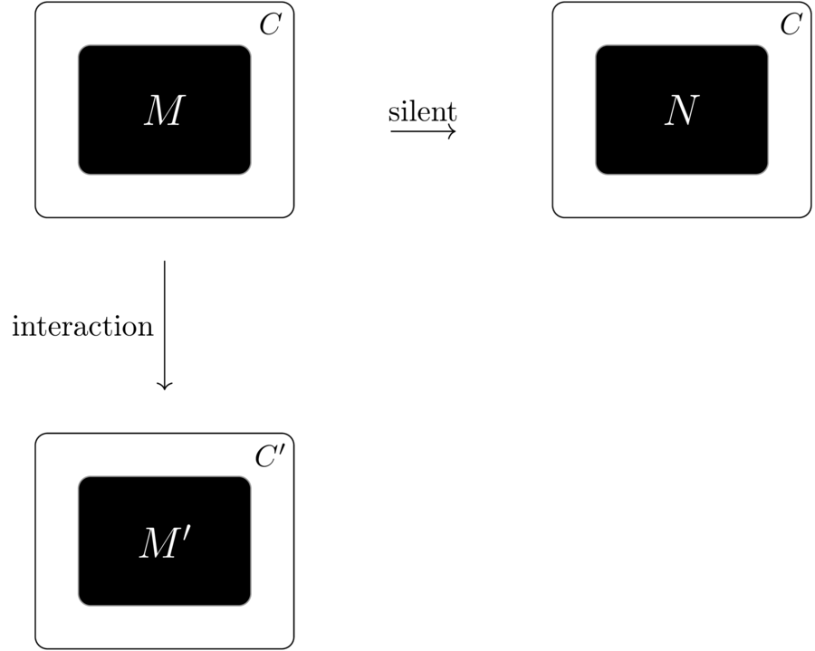

This talk is about characterizing the preorder on λ-terms induced by a model — the relational semantics — as an operationally defined contextual preorder.
We’ll see that the relational semantics corresponds to a quantitative improvement order.
Reduction relation: \[ M \rightarrow N~\text{and its transitive closure}~M \rightarrow^{*} N \]
Use this to define a notion of observation \(\obs{M}\).
Examples:
From this we define a contextual preorder: \(M \lectx N\) means \[ \text{for all contexts}~C[-]. \obs{C[M]} \subseteq \obs{C[N]} \]
Interpret programs as mathematical entities:
for a program phrase \(M\), its interpretation is \(\sem{M}\).
Typically \(\sem{M}\) is some kind of function
We’ll mostly consider the case where \(\sem{M}\) is a relation.
Other kinds of models exist, e.g. game semantics.
If the universe of interpretations carries a natural partial order, we obtain a denotational preorder on programs: \[ M \leden N \Leftrightarrow \sem{M} \sqsubseteq \sem{N}. \]
Typically, denotational models also allow us to make “observations”: for example
We usually expect that the denotational partial order preserves observations i.e. \[ \sem{M} \sqsubseteq \sem{N} \Rightarrow \obs{\sem{M}} \subseteq \obs{\sem{N}}. \]
\[ \obs{M} \subseteq \obs{\sem{M}} \]
Typically easy to prove. It sometimes follows readily from reduction invariance \[ M \rightarrow N \quad \Rightarrow \quad \sem{M} = \sem{N}. \] plus simple facts about the semantics of normal forms.
\[ \obs{\sem{M}} \subseteq \obs{M}. \]
This says that the operational semantics is adequate to generate all observations predicted by the model.
\[ M \leden N \Rightarrow M \lectx N. \]
This follows from the observational soundness and adequacy properties, provided the denotational semantics is compositional and monotone.
\[ M \lectx N \Rightarrow M \leden N \]
This property is notoriously difficult to establish for many kinds of programming language. For PCF this is the famous full abstraction problem.
In the λ-calculus, the situation is different.
\[ M ::= x \mid MM \mid \lambda x.M \quad\quad (\lambda x.M)N \rightarrow_\beta M[N/x] \]
In the pure λ-calculus there is another important class of preorders based on Böhm-trees.
If \(M\rightarrow^* \lambda x_{1}\ldots x_{n}.y\,M_{1}\cdots M_{k}\):
Otherwise, \(M\) is head diverging: \( \BT{M} = \bot.\)
We also define two extensions:
\[ x \not \sqsubseteq_{\mathbf{B}} \lambda y. xy \quad \lambda y. xy \not \sqsubseteq_{\mathbf{B}} x \] \[ x \sqsubseteq_{\mathbf{B}\eta} \lambda y. xy \quad \lambda y. xy \sqsubseteq_{\mathbf{B}\eta} x \] \[ x \not \sqsubseteq_{\mathbf{B}\eta^{\text{red}}} \lambda y. xy \quad \lambda y. xy \sqsubseteq_{\mathbf{B}\eta^{\text{red}}} x \]
In the standard domain-theoretic models of λ-calculus – the so-called \(D_\infty\) models – we have the correspondence \[ \sem{M} \not = \bot \Leftrightarrow M\rightarrow^*\mathsf{hnf}. \]
Taking a contextual preorder based on observing reduction to head normal form, we get \[ M \leden N \Rightarrow M \lectx N. \]
We also have \[ M \sqsubseteq_{\mathbf{B}\eta} N \Rightarrow M \leden N. \]
The “Böhm-out” technique (Hyland (1976)) builds contexts that distinguish terms with distinct Böhm-trees: \[ M \not \sqsubseteq_{\mathbf{B}\eta} N \Rightarrow \exists C[-]. C[M] \rightarrow^*\mathsf{hnf}~\text{but}~C[N]\not\rightarrow^*\mathsf{hnf} \]
Therefore \[ \sem{M} \sqsubseteq \sem{N} \Leftrightarrow M \lectx N. \]
This talk is about the relational semantics of the λ-calculus.
Relational semantics grew from Girard’s quantitative semantics (1988) and can be seen as a simple model of linear logic (Girard, 1987).
Our model will interpret programs as certain kinds of relations. They can be seen as morphisms of a cartesian closed category defined by:
Here \(\mathbf{M}_f(A)\) is the set of finite multisets drawn from \(A\).
The model is a reflexive object in this category.
However, the model is easier to explain in the form of a non-idempotent intersection type system.
Idea: give a system of type derivations yielding judgements of the form \[ x_1: \mu_1, \ldots, x_n:\mu_n \vdash M: \alpha \] The denotation of a term is the set of its valid typings.
In this case, each “type” \(\mu_i\) is a multiset of types, so we get something akin to the morphisms in the category described above.
\[ \frac{}{x:[\alpha] \vdash x:\alpha}~\text{ax} \quad\quad \frac{\Gamma_i \vdash M: \alpha_i~~(i \in I~\text{finite})}{\uplus_{i \in I}\Gamma_i \vdash M: [\alpha_i]_{i \in I}}~\text{many} \]
\[ \frac{\Gamma, x:\mu \vdash M: \alpha}{\Gamma \vdash \lambda x.M: \mu \rightarrow \alpha}~\lambda \quad\quad \frac{\Gamma \vdash M: \mu \rightarrow \alpha \quad \Delta \vdash N: \mu} {\Gamma \uplus \Delta \vdash MN : \alpha}~\text{@} \]
If \( M \rightarrow_\beta N \) then \[ \Gamma \vdash M: \alpha \Leftrightarrow \Gamma \vdash N:\alpha \]
Taking \(\sem{M}\) to be the set of typings of \(M\), this says: \[ \text{if}~M\rightarrow_\beta N~\text{then}~\sem{M} = \sem{N}. \]
This model has quantitative content: the multisets count something. But what?
They keep track of how many times an argument is used: for example we can type \[ f: [[\alpha] \rightarrow [\alpha'] \rightarrow \alpha] \vdash \lambda x. f~x~x:[\alpha, \alpha']\rightarrow \alpha. \]
The many rule means that these multiplicities are also seen in derivations. \[ \cfrac{\cfrac{\vdots}{f: [[\alpha] \rightarrow [\alpha'] \rightarrow \alpha] \vdash \lambda x. f~x~x:[\alpha, \alpha']\rightarrow \alpha}\quad \cfrac{\vdash M: \alpha \quad \vdash M: \alpha'}{\vdash M: [\alpha,\alpha']}}{f: [[\alpha] \rightarrow [\alpha'] \rightarrow \alpha]\vdash (\lambda x. f~x~x) M: \alpha }~@ \] The function uses \(M\) twice, so we need two derivations of \(M\).
Though substitution may duplicate or discard terms, it does not duplicate or discard their type derivations.
Type derivations track more quantitative information than the types: a typing of \((\lambda x. M)N\) contains exactly one more @-rule than the matching typing of \(M[N/x]\).
So for head reductions \[ \lambda x_1 \ldots x_n. R~M_1 \ldots M_k \rightarrow_h \lambda x_1 \ldots x_n. R'~M_1 \ldots M_k \] we have a quantitative subject reduction theorem.
If \(M \rightarrow_h N\) and \(\Gamma \vdash M:\alpha\) with a typing derivation containing \(k\) instances of the @-rule, then \(\Gamma \vdash N:\alpha\) with a derivation containing \(k-1\) instances of the @-rule.
The restriction to head reductions is essential : for example \(x \Omega \rightarrow_\beta x \Omega\), but this is never a head reduction.
A term \(M\) has a head normal form if and only if it has a type in this system. Therefore \[ \sem{M} \not = \emptyset \Leftrightarrow M \rightarrow^* \mathsf{hnf}. \]
We now know: \[ \text{if}~\sem{M} \subseteq \sem{N}~\text{then for all}~C[-]. C[M]\rightarrow^* \mathsf{hnf} \Rightarrow C[N]\rightarrow^* \mathsf{hnf}\] and hence the denotational order implies the extensional Böhm-tree order \[ M \sqsubseteq_{\mathbf{B}\eta} N\]
The converse is not true. For example \(x \sqsubseteq_{\mathbf{B}\eta} \lambda y. x y \) but \[ x : [a] \vdash x: a \quad\quad x : [a] \not\vdash \lambda y. x y: a \quad \]
In fact thanks to Breuvart, Manzonetto and Ruoppolo (2018) we know that
But these are all qualitative. Where have the quantities gone? Can we recover a contextual ordering by paying attention to quantities?
Sands introduced the idea of a contextual improvement order.
Idea: observe not just what happens but how long it takes.
For example: observe the length of a head-reduction sequence.
We write \( M \Downarrow^k \) if \(M\) reduces to hnf in \(k\) head reduction steps.
Then we can define improvement: \(M \leimp N \) iff \[ \text{for all contexts}~C[-]. C[M]\Downarrow^k \Rightarrow \exists k'\leq k. C[N]\Downarrow^{k'} \]
\(N\) does the same things as \(M\) in fewer steps.
Note that an order that counts reductions cannot be the order induced by a denotational semantics that is sound for beta-reduction.
(There are very few denotational models of improvement orders as a result. One exception is Ghica’s slot games (2005)).
So our plan to use this idea to capture the relational order must fail. Yet here we are…
Accattoli et al. (2025) introduced the checkers calculus.
Idea: distinguish internal reductions of a term from interactions with its context.

Terms are labelled with two badges: \(\bullet\) for “internal” and \(\circ\) for “external”. \[ M, N ::= x \mid \lambda_\bullet x. M \mid \lambda_\circ x. M \mid M \bullet N \mid M \circ N \]
Silent reductions: \[ (\lambda_\bullet x.M)\bullet N \rightarrow M[N/x] \quad (\lambda_\circ x.M)\circ N \rightarrow M[N/x] \]
Interaction reductions: \[ (\lambda_\bullet x.M)\circ N \stackrel{\interact}{\rightarrow} M[N/x] \quad (\lambda_\circ x.M)\bullet N \stackrel{\interact}{\rightarrow} M[N/x] \]
We can embed the ordinary λ-calculus by using \(\bullet\) for every label. Every reduction would be silent.
The fun starts when we embed a \(\bullet\)-labelled term in a \(\circ\)-labelled context.
Two versions of the identity function in the context \(- \circ (\lambda_\circ x.x) \).
Note that eta-expansion increases the number of interaction steps, and also changes the labelling of the result.
We can now define an appropriate improvement ordering for terms of this calculus.
We observe the number of interaction steps in a head-reduction sequence.
We write \( M \Downarrow^k \) if \(M\) reduces to hnf in \(k\) head interaction steps.
Then we can define improvement: \(M \leimp N \) iff \[ \text{for all contexts}~C[-]. C[M]\Downarrow^k \Rightarrow \exists k'\leq k. C[N]\Downarrow^{k'} \]
\(N\) does the same things as \(M\) in fewer interaction steps.
For a regular λ-term labelled with \(\bullet\) throughout, all steps are silent.
Terms that are β-equivalent will be equivalent in this preorder.
But our example shows that \(\circ\)-labelled contexts can distinguish between η-convertible terms: η-reduction seems to deliver improvement.
Conjecture The interaction improvement preorder on λ-terms coincides with the relational preorder.
First step If \(M \leimp N\) then \(M \sqsubseteq_{\mathbf{B}\eta^{\text{red}}} N\) (and hence \(\sem{M} \subseteq \sem{N}\) in the relational semantics).
Proved via syntactic methods akin to Hyland’s Böhm-out technique.
For the converse we will refine the relational semantics.
We annotate the types:
and the judgements: \[ \Gamma \vdash^k M : \alpha \]
Judgement annotations track the number of interaction applications: \[ \frac{}{x:[\alpha] \vdash^0 x:\alpha}~\text{ax} \quad\quad \frac{\Gamma_i \vdash^{k_i} M: \alpha_i~~(i \in I~\text{finite})}{\uplus_{i \in I}\Gamma_i \vdash^{\sum_i k_i} M: [\alpha_i]_{i \in I}}~\text{many} \]
\[ \frac{\Gamma, x:\mu \vdash^k M: \alpha}{\Gamma \vdash^k \lambda_{\bullet/\circ} x.M: \mu \stackrel{\bullet/\circ}{\rightarrow} \alpha}~\lambda \]
\[ \frac{\Gamma \vdash^k M: \mu \stackrel{\bullet}{\rightarrow} \alpha \quad \Delta \vdash^{k'} N: \mu} {\Gamma \uplus \Delta \vdash^{k+k'} M \bullet N : \alpha}~\text{@-silent} \]
\[ \frac{\Gamma \vdash^k M: \mu \stackrel{\bullet}{\rightarrow} \alpha \quad \Delta \vdash^{k'} N: \mu} {\Gamma \uplus \Delta \vdash^{k+k'+1} M \circ N : \alpha}~\text{@-interact} \] (plus rules exchanging \(\bullet\) with \(\circ\)).
In the plain relational semantics we have the following typings for identity-like terms \[ \vdash \lambda x. x: [[a] \rightarrow a] \rightarrow [a] \rightarrow a \] \[ \vdash \lambda x. \lambda y. x y: [[a] \rightarrow a] \rightarrow [a] \rightarrow a \]
In the checkers calculus we have: \[ \vdash^0 \lambda_\bullet x. x : [[a] \stackrel{\bullet}{\rightarrow} a] \stackrel{\bullet}{\rightarrow} [a] \stackrel{\bullet}{\rightarrow} a \quad\quad \vdash^0 \lambda_\bullet x. \lambda_\bullet y. x \bullet y : [[a] \stackrel{\bullet}{\rightarrow} a] \stackrel{\bullet}{\rightarrow} [a] \stackrel{\bullet}{\rightarrow} a \] \[ \vdash^0 \lambda_\bullet x. x : [[a] \stackrel{\circ}{\rightarrow} a] \stackrel{\bullet}{\rightarrow} [a] \stackrel{\circ}{\rightarrow} a \quad\quad \vdash^1 \lambda_\bullet x. \lambda_\bullet y. x \bullet y : [[a] \stackrel{\circ}{\rightarrow} a] \stackrel{\bullet}{\rightarrow} [a] \stackrel{\bullet}{\rightarrow} a \] Key insight: η-reductions lead to typings that are either the same, or “whiter and cheaper”.
With the same techniques as for the regular relational semantics, we can prove
For any term \(M\) of the checkers calculus:
As a corollary, \[ \text{if}~\sem{M} \subseteq \sem{N}~\text{then}~M \leimp N. \]
However, semantic inclusion does not precisely capture \(\leimp\) because we know \[ \lambda_\bullet x. \lambda_\bullet y. x \bullet y \leimp \lambda_\bullet x. x \] We need to capture the “whiter and cheaper” idea.
We write \(\alpha \leq_k^+ \alpha'\) if \(\alpha\) can be obtained from \(\alpha'\) by changing \(k\) positively occurring instances of \(\bullet\) to \(\circ\).
We write \(\alpha \leq_k^- \alpha'\) if \(\alpha\) can be obtained from \(\alpha'\) by changing \(k\) negatively occurring instances of \(\bullet\) to \(\circ\).
For example \[ [a] \stackrel{\circ}{\rightarrow} a \leq_1^+ [a] \stackrel{\bullet}{\rightarrow} a \] \[ [[a] \stackrel{\circ}{\rightarrow} a] \stackrel{\bullet}{\rightarrow} a \leq_1^- [[a] \stackrel{\bullet}{\rightarrow} a] \stackrel{\bullet}{\rightarrow} a \]
For closed checkers terms \(M\), \(N\), we write \(M \lepwc N\) if and only if \[ \text{if}~\vdash^k M: \alpha~\text{then there exists}~\vdash^{k'} N:\alpha'~\text{and}~d~\text{such that}~\alpha' \leq_d^+ \alpha, k'+d \leq k. \]
The typing of \(N\) is \(d\)-whiter and at least \(d\)-cheaper.
For ordinary λ-terms, we know \[ M \leimp N \Rightarrow M \sqsubseteq_{\mathbf{B}\eta^{\text{red}}} N \]
By direct analysis of typing derivations on Böhm-trees we can prove
If \(M \sqsubseteq_{\mathbf{B}\eta^{\text{red}}} N\) then \(M \lepwc N\).
It remains to prove that \(M \lepwc N\) implies \(M \leimp N\).
Suppose the \(\lepwc\) ordering is preserved by term constructors.
Then \(M \lepwc N\) implies \(C[M] \lepwc C[N]\) for any context \(C[-]\).
If \(C[M] \Downarrow^k\) then \(C[M]\) has a typing \(\vdash^k C[M] : \alpha\).
By \(\lepwc\) we obtain a typing \(\vdash^{k'} C[N]:\alpha'\) with \(k' \leq k\).
Hence \(C[N]\Downarrow^{k''}\) for some \(k'' \leq k' \leq k\).
So \(M \leimp N\).
But is \(\lepwc\) compositional?
Consider an application \[ \frac{\vdash^k M: [\alpha] \stackrel{\bullet}{\rightarrow} \beta \quad \vdash^{k'} N: \alpha}{\vdash^{k+k'} M \bullet N: \beta} \]
If we replace \(N\) by an improved (whiter-cheaper) term \[ \vdash^{k''} N': \alpha' \] where \(\alpha' \leq_d^+ \alpha\), we can no longer apply the rule.
We’d like to find a new typing for \(M\) of the form \[ \vdash^{l} M: [\alpha'] \stackrel{\bullet}{\rightarrow} \beta \]
Suppose \(\vdash^k M : \alpha\) and \(\alpha' \leq_1^- \alpha\). Then there exists a typing \[ \vdash^{k'} M: \alpha'' \] such that one of the following holds:
Start with \[ \vdash^0 \lambda_\bullet x. x : [[a] \stackrel{\bullet}{\rightarrow} a] \stackrel{\bullet}{\rightarrow} [a] \stackrel{\bullet}{\rightarrow} a \] Change a negatively occurring \(\bullet\) to \(\circ\): \[ \not\vdash^0 \lambda_\bullet x. x : [[a] \stackrel{\circ}{\rightarrow} a] \stackrel{\bullet}{\rightarrow} [a] \stackrel{\bullet}{\rightarrow} a \] Repainting a positively occurring \(\bullet\) to \(\circ\) yields a valid typing: \[ \vdash^0 \lambda_\bullet x. x : [[a] \stackrel{\circ}{\rightarrow} a] \stackrel{\bullet}{\rightarrow} [a] \stackrel{\circ}{\rightarrow} a \]
As we repaint a typing derivation, we may encounter \[ \frac{\vdash^k M: \mu \stackrel{\bullet}{\rightarrow} \alpha \quad \vdash^{k'} N: \mu}{\vdash^{k+k'} M\bullet N: \alpha} \] being repainted to \[ \frac{\vdash^k M: \mu \stackrel{\circ}{\rightarrow} \alpha \quad \vdash^{k'} N: \mu}{\not\vdash^{k+k'} M\bullet N: \alpha} \] The repainting here propagates to an additional interaction step: \[ \frac{\vdash^k M: \mu \stackrel{\circ}{\rightarrow} \alpha \quad \vdash^{k'} N: \mu}{\vdash^{k+k'+1} M\bullet N: \alpha} \]
We may need to repaint more steps in the derivation: given \[ \frac{\vdash^k M: \mu \stackrel{\bullet}{\rightarrow} \alpha \quad \vdash^{k'} N: \mu}{\vdash^{k+k'} M\bullet N: \alpha} \] Repaint \(N:\mu\) to \(\mu' \leq_1^+ \mu\): \[ \frac{\vdash^k M: \mu \stackrel{\bullet}{\rightarrow} \alpha \quad \vdash^{k'} N: \mu'}{\not\vdash^{k+k'} M\bullet N: \alpha} \] repainting propagates to \(M\): \[ \frac{\not\vdash^k M: \mu' \stackrel{\bullet}{\rightarrow} \alpha \quad \vdash^{k'} N: \mu'}{\not\vdash^{k+k'} M\bullet N: \alpha} \] which requires repainting \(\mu'\) to \(\mu'' \leq_1^- \mu'\): \[ \frac{\vdash^k M: \mu'' \stackrel{\bullet}{\rightarrow} \alpha \quad \vdash^{k'} N: \mu'}{\not\vdash^{k+k'} M\bullet N: \alpha} \]
This is still not valid! But the process may terminate at the next step with e.g. \[ \frac{\vdash^k M: \mu'' \stackrel{\bullet}{\rightarrow} \alpha \quad \vdash^{k''} N: \mu''}{\vdash^{k+k''} M\bullet N: \alpha} \]
The termination argument is very easy:
If \(M \lepwc N\) then \(C[M] \lepwc C[N]\) for any context \(C[-]\) and hence \(M \leimp N\).
We introduced an interaction based improvement order on checkers terms, and hence on λ-terms.
We developed an annotated relational semantics and associated denotational improvement ordering \(\lepwc\).
On λ-terms, we showed that the order induced by the ordinary relational model coincides with the improvement order, yielding a quantitative analogue of the Hyland-Wadsworth theorem.